USSR · Tier VIII
All nations and tiers · EU v20410 → RU v14600ru · 3 November 2026
IS-2-II · Tier VIII
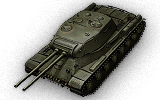
Firepower
DPM (HP/min) EU 2 346.75  RU 2 208.71
RU 2 208.71
Rate of fire (rounds/min) EU 7.82 RU 7.36
Reload time (s) EU 7.67 RU 8.15
Gun handling
Aim time (s) EU 2.21 RU 2.40
Dispersion (m/100 m) EU 0.36  RU 0.35
RU 0.35
Dispersion · damaged EU 0.73 RU 0.69
Depression (°) EU 7 RU 8
Mobility
Forward speed (km/h) EU 38 RU 36
Forward speed on hard terrain (km/h) EU 38 RU 36
Forward speed on medium terrain (km/h) EU 38 RU 36
Tank traverse (°/s) EU 35.46 RU 31.29
Tank traverse on hard terrain (°/s) EU 38.34 RU 34.82
Tank traverse on medium terrain (°/s) EU 27.38 RU 24.87
Tank traverse on soft terrain (°/s) EU 18.26 RU 16.58
Armor & health
Hull armor · front (mm) EU 110 RU 135
Health EU 1 650 RU 1 600
Miscellaneous
View range (m) EU 350 RU 370
Alternate mode
EU stats · RU statsFirepower
DPM (HP/min) EU 2 346.75 RU 2 208.71
Rate of fire (rounds/min) EU 7.82 RU 7.36
Reload time (s) EU 7.67 RU 8.15
Gun handling
Aim time (s) EU 2.21 RU 2.40
Dispersion (m/100 m) EU 0.36 RU 0.35
Dispersion · damaged EU 0.73 RU 0.69
Depression (°) EU 7 RU 8
Mobility
Forward speed (km/h) EU 38 RU 36
Forward speed on hard terrain (km/h) EU 38 RU 36
Forward speed on medium terrain (km/h) EU 38 RU 36
Tank traverse (°/s) EU 35.46 RU 31.29
Tank traverse on hard terrain (°/s) EU 38.34 RU 34.82
Tank traverse on medium terrain (°/s) EU 27.38 RU 24.87
Tank traverse on soft terrain (°/s) EU 18.26 RU 16.58
Armor & health
Hull armor · front (mm) EU 110 RU 135
Health EU 1 650 RU 1 600
Miscellaneous
View range (m) EU 350 RU 370
IS-3 · Tier VIII
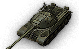
Firepower
DPM (HP/min) EU 1 835.05 RU 1 984.24
Rate of fire (rounds/min) EU 4.71 RU 5.09
Reload time (s) EU 12.75 RU 11.79
Mobility
Forward speed (km/h) EU 45 RU 38
Forward speed on hard terrain (km/h) EU 45 RU 38
Forward speed on medium terrain (km/h) EU 44.30 RU 38
Forward speed on soft terrain (km/h) EU 29.53 RU 27.32
Engine power (hp) EU 800 RU 740.10
Power/weight (hp/t) EU 16.29 RU 15.07
Tank traverse (°/s) EU 37.55 RU 31.29
Tank traverse on hard terrain (°/s) EU 39.68 RU 33.40
Tank traverse on medium terrain (°/s) EU 28.35 RU 23.86
Tank traverse on soft terrain (°/s) EU 18.90 RU 15.91
Armor & health
Hull armor · front (mm) EU 110 RU 120
Health EU 1 650 RU 1 500
Miscellaneous
View range (m) EU 370 RU 350
IS-3A · Tier VIII
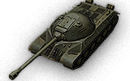
Firepower
DPM (HP/min) EU 2 033.85 RU 1 991.93
Rate of fire (rounds/min) EU 5.21 RU 5.11
Reload time (s) EU 11.51 RU 11.75
IS-3A Peregrine · Tier VIII
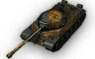
Firepower
DPM (HP/min) EU 2 033.85 RU 1 991.93
Rate of fire (rounds/min) EU 5.21 RU 5.11
Reload time (s) EU 11.51 RU 11.75
IS-5 (Object 730) · Tier VIII
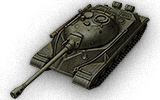
Gun handling
Aim time (s) EU 2.59 RU 3.07
Dispersion (m/100 m) EU 0.40 RU 0.44
Dispersion · damaged EU 0.81 RU 0.88
Dispersion · moving EU 0.17 RU 0.20
Dispersion · tank traverse EU 0.17 RU 0.20
Dispersion · turret traverse EU 0.08 RU 0.10
Armor & health
Health EU 1 550 RU 1 700
IS-M · Tier VIII
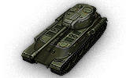
Penetration (mm)
EU  AP 221 /
AP 221 /  APCR 258 /
APCR 258 /  HE 68 → RU
HE 68 → RU  AP 221 /
AP 221 /  APCR 254 /
APCR 254 /  HE 68
HE 68
Gun handling
Aim time (s) EU 2.68 RU 2.88
Mobility
Tank traverse on hard terrain (°/s) EU 27.08 RU 28.32
Tank traverse on medium terrain (°/s) EU 17.52 RU 18.32
Tank traverse on soft terrain (°/s) EU 11.91 RU 12.46
Armor & health
Hull armor · front (mm) EU 130 RU 145
Health EU 1 650 RU 1 600
Miscellaneous
Moving camo EU 3.24 RU 3.19
Moving camo · after firing EU 0.58 RU 0.57
ISU-122-2 · Tier VIII
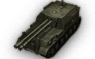
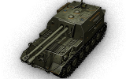
Gun handling
Aim time (s) EU 1.92 RU 2.21
Dispersion · damaged EU 0.71 RU 0.69
Dispersion · moving EU 0.15 RU 0.22
Dispersion · tank traverse EU 0.15 RU 0.22
Dispersion · turret traverse EU 0.10 RU 0.12
Mobility
Forward speed (km/h) EU 40 RU 52
Forward speed on hard terrain (km/h) EU 40 RU 52
Forward speed on medium terrain (km/h) EU 40 RU 52
Forward speed on soft terrain (km/h) EU 30.05 RU 32.05
Reverse speed (km/h) EU 20 RU 15
Engine power (hp) EU 750 RU 800
Power/weight (hp/t) EU 15 RU 16
Armor & health
Hull armor · front (mm) EU 190 RU 20
Hull armor · side (mm) EU 65 RU 15
Hull armor · rear (mm) EU 40 RU 10
Alternate mode
EU stats · RU statsGun handling
Aim time (s) EU 1.92 RU 2.21
Dispersion · damaged EU 0.71 RU 0.69
Dispersion · moving EU 0.15 RU 0.22
Dispersion · tank traverse EU 0.15 RU 0.22
Dispersion · turret traverse EU 0.10 RU 0.12
Mobility
Forward speed (km/h) EU 40 RU 52
Forward speed on hard terrain (km/h) EU 40 RU 52
Forward speed on medium terrain (km/h) EU 40 RU 52
Forward speed on soft terrain (km/h) EU 30.05 RU 32.05
Reverse speed (km/h) EU 20 RU 15
Engine power (hp) EU 750 RU 800
Power/weight (hp/t) EU 15 RU 16
Armor & health
Hull armor · front (mm) EU 190 RU 20
Hull armor · side (mm) EU 65 RU 15
Hull armor · rear (mm) EU 40 RU 10
ISU-152 · Tier VIII
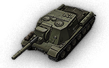
Gun handling
Aim time (s) EU 2.97 RU 3.26
Dispersion (m/100 m) EU 0.36 RU 0.39
Dispersion · damaged EU 0.73 RU 0.79
Mobility
Forward speed on medium terrain (km/h) EU 43 RU 40.91
Forward speed on soft terrain (km/h) EU 26.24 RU 24.90
Reverse speed (km/h) EU 13 RU 12
Engine power (hp) EU 780 RU 740.10
Power/weight (hp/t) EU 15.86 RU 15.05
Tank traverse (°/s) EU 31.29 RU 21.90
Tank traverse on hard terrain (°/s) EU 29.53 RU 22.57
Tank traverse on medium terrain (°/s) EU 23.20 RU 17.73
Tank traverse on soft terrain (°/s) EU 14.12 RU 10.79
Armor & health
Health EU 1 250 RU 1 200
Health · engine EU 275 RU 370
Health · track EU 220 RU 200
Track repair time (s) EU 11.70 RU 12.03
ISU-152K · Tier VIII
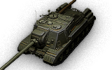
Gun handling
Aim time (s) EU 3.26 RU 3.36
Dispersion (m/100 m) EU 0.40 RU 0.41
Dispersion · damaged EU 0.81 RU 0.82
KV-4 · Tier VIII
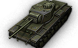
Penetration (mm)
EU  APCR 217 /
APCR 217 /  HEAT 270 /
HEAT 270 /  HE 61 → RU
HE 61 → RU  AP 227 /
AP 227 /  APCR 289 /
APCR 289 /  HE 62
HE 62
Damage (HP)
EU  APCR 390 /
APCR 390 /  HEAT 390 /
HEAT 390 /  HE 530 → RU
HE 530 → RU  AP 320 /
AP 320 /  APCR 320 /
APCR 320 /  HE 420
HE 420
Firepower
DPM (HP/min) EU 2 033.85 RU 2 225.07
Module damage EU 165 RU 150
Rate of fire (rounds/min) EU 5.21 RU 6.95
Reload time (s) EU 11.51 RU 8.63
Caliber EU 122 RU 107
Shell velocity (m/s) EU 975 RU 1 043
Normalization EU 2 RU 5
Potential damage EU 19 500 RU 16 000
Gun handling
Aim time (s) EU 2.88 RU 2.21
Dispersion (m/100 m) EU 0.40 RU 0.35
Dispersion · damaged EU 0.81 RU 0.69
Dispersion · moving EU 0.22 RU 0.23
Dispersion · tank traverse EU 0.22 RU 0.23
Dispersion · turret traverse EU 0.14 RU 0.10
Depression (°) EU 8 RU 6
Mobility
Forward speed (km/h) EU 32 RU 30
Forward speed on hard terrain (km/h) EU 32 RU 30
Forward speed on medium terrain (km/h) EU 31.70 RU 30
Forward speed on soft terrain (km/h) EU 19.02 RU 18.10
Engine power (hp) EU 1 330 RU 1 268.74
Weight (kg) EU 106 445 → RU 106 695
Power/weight (hp/t) EU 12.49 RU 11.89
Tank traverse (°/s) EU 26.08 RU 18.77
Tank traverse on hard terrain (°/s) EU 26.01 RU 20.57
Tank traverse on medium terrain (°/s) EU 22.54 RU 17.83
Tank traverse on soft terrain (°/s) EU 13.53 RU 10.70
Armor & health
Hull armor · front (mm) EU 180 RU 220
Turret armor · front (mm) EU 220 RU 240
Health EU 1 800 RU 1 700
Miscellaneous
Stationary camo · after firing EU 0.34 RU 0.37
Moving camo · after firing EU 0.17 RU 0.19
Shell cost EU 1 060 RU 1 010
KV-4 Kreslavskiy · Tier VIII
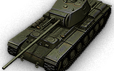
Firepower
DPM (HP/min) EU 1 772.18 RU 1 944.23
Rate of fire (rounds/min) EU 5.54 RU 6.08
Reload time (s) EU 10.83 RU 9.88
Gun handling
Aim time (s) EU 2.78 RU 2.49
KV-4 KTTS · Tier VIII
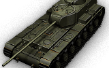
Penetration (mm)
EU  AP 227 /
AP 227 /  APCR 289 /
APCR 289 /  HE 62 → RU
HE 62 → RU  AP 237 /
AP 237 /  APCR 289 /
APCR 289 /  HE 62
HE 62
Firepower
DPM (HP/min) EU 2 682 RU 2 851.75
Rate of fire (rounds/min) EU 7.45 RU 7.92
Reload time (s) EU 8.05 RU 7.57
Gun handling
Aim time (s) EU 2.40 RU 2.11
Dispersion · moving EU 0.22 RU 0.17
Dispersion · tank traverse EU 0.22 RU 0.17
Dispersion · turret traverse EU 0.12 RU 0.10
Armor & health
Hull armor · front (mm) EU 200 RU 250
Turret armor · front (mm) EU 250 RU 280
Turret armor · side (mm) EU 125 RU 150
Turret armor · rear (mm) EU 125 RU 150
Miscellaneous
View range (m) EU 350 RU 370
KV-4 Turchaninov · Tier VIII
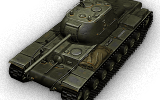
Penetration (mm)
EU  AP 225 /
AP 225 /  APCR 255 /
APCR 255 /  HE 53 → RU
HE 53 → RU  AP 227 /
AP 227 /  APCR 262 /
APCR 262 /  HE 62
HE 62
Damage (HP)
EU  AP 300 /
AP 300 /  APCR 300 /
APCR 300 /  HE 400 → RU
HE 400 → RU  AP 320 /
AP 320 /  APCR 320 /
APCR 320 /  HE 420
HE 420
Firepower
DPM (HP/min) EU 2 208.71 RU 2 355.95
Ammo capacity EU 70 RU 105
Potential damage EU 21 000 RU 33 600
Clip size EU — → RU 3
Clip damage · damage EU — → RU 960
Clip damage · time (s) EU — → RU 6
Intra-clip reload EU — → RU 3
Gun handling
Aim time (s) EU 2.21 RU 2.49
Dispersion (m/100 m) EU 0.40 RU 0.36
Dispersion · damaged EU 0.81 RU 0.73
Dispersion · moving EU 0.20 RU 0.18
Dispersion · tank traverse EU 0.20 RU 0.18
Dispersion · turret traverse EU 0.10 RU 0.14
Dispersion · firing EU 4 RU 3
Mobility
Forward speed (km/h) EU 30 RU 26
Forward speed on hard terrain (km/h) EU 30 RU 26
Forward speed on medium terrain (km/h) EU 30 RU 26
Forward speed on soft terrain (km/h) EU 19.28 RU 18.04
Engine power (hp) EU 1 140 RU 1 200
Weight (kg) EU 90 000 → RU 101 250
Power/weight (hp/t) EU 12.67 RU 11.85
Turret traverse (°/s) EU 22.95 RU 25.03
Tank traverse (°/s) EU 22.95 RU 18.77
Tank traverse on hard terrain (°/s) EU 22.95 RU 18.77
Tank traverse on medium terrain (°/s) EU 19.89 RU 16.27
Tank traverse on soft terrain (°/s) EU 11.93 RU 9.76
Armor & health
Hull armor · rear (mm) EU 140 RU 90
Turret armor · front (mm) EU 220 RU 210
Turret armor · rear (mm) EU 100 RU 130
Health · engine EU 275 RU 360
Health · ammo rack EU 210 RU 200
Track repair time (s) EU 11.70 RU 12.03
Miscellaneous
Stationary camo · after firing EU 0.97 RU 0.44
Moving camo · after firing EU 0.48 RU 0.22
Radio range (m) EU 594.51 RU 761.39
Shell cost EU 572 RU 1 010
LT-432 · Tier VIII
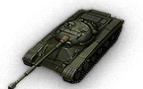
Firepower
DPM (HP/min) EU 2 166.23 RU 2 121.58
Rate of fire (rounds/min) EU 12.03 RU 11.79
Reload time (s) EU 4.99 RU 5.09
LTS-85 · Tier VIII
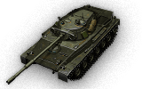
Penetration (mm)
EU  AP 190 /
AP 190 /  HEAT 250 /
HEAT 250 /  HE 50 → RU
HE 50 → RU  AP 221 /
AP 221 /  HEAT 280 /
HEAT 280 /  HE 50
HE 50
Firepower
DPM (HP/min) EU 1 500 RU 2 278.48
Rate of fire (rounds/min) EU 5 RU 7.59
Reload time (s) EU 12 RU 7.90
Gun handling
Aim time (s) EU 2.21 RU 1.82
Dispersion (m/100 m) EU 0.42 RU 0.31
Dispersion · damaged EU 0.84 RU 0.61
Mobility
Forward speed (km/h) EU 65 RU 60
Forward speed on hard terrain (km/h) EU 65 RU 60
Forward speed on medium terrain (km/h) EU 65 RU 60
Forward speed on soft terrain (km/h) EU 65 RU 60
Reverse speed (km/h) EU 23 RU 20
Armor & health
Health EU 1 150 RU 1 300
Miscellaneous
Moving camo EU 15.62 RU 11.68
Moving camo · after firing EU 3.09 RU 2.31
LTTB · Tier VIII
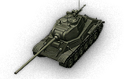
Penetration (mm)
EU  AP 185 /
AP 185 /  APCR 216 /
APCR 216 /  HE 44 → RU
HE 44 → RU  AP 170 /
AP 170 /  APCR 216 /
APCR 216 /  HE 44
HE 44
Firepower
DPM (HP/min) EU 2 208.71 RU 2 086
Rate of fire (rounds/min) EU 12.27 RU 11.59
Reload time (s) EU 4.89 RU 5.18
Gun handling
Aim time (s) EU 1.92 RU 2.01
Dispersion (m/100 m) EU 0.34 RU 0.35
Dispersion · damaged EU 0.67 RU 0.69
Dispersion · moving EU 0.10 RU 0.12
Dispersion · tank traverse EU 0.10 RU 0.12
Dispersion · firing EU 3 RU 4
Mobility
Forward speed (km/h) EU 73 RU 68
Forward speed on hard terrain (km/h) EU 73 RU 68
Forward speed on medium terrain (km/h) EU 73 RU 68
Forward speed on soft terrain (km/h) EU 73 RU 68
Reverse speed (km/h) EU 25 RU 20
Engine power (hp) EU 900 RU 770
Weight (kg) EU 22 530 → RU 22 680
Power/weight (hp/t) EU 39.95 RU 33.95
Terrain resist (hard) EU 0.86 RU 0.90
Terrain resist (med) EU 0.96 RU 1
Terrain resist (soft) EU 1.53 RU 1.60
Tank traverse (°/s) EU 66.75 RU 50.06
Tank traverse on hard terrain (°/s) EU 69.89 RU 63.17
Tank traverse on medium terrain (°/s) EU 62.90 RU 56.86
Tank traverse on soft terrain (°/s) EU 39.32 RU 35.53
Armor & health
Track armor EU 20 RU 15
Health EU 1 300 RU 1 050
Miscellaneous
Stationary camo EU 16.13 RU 15.39
Stationary camo · after firing EU 3.84 RU 3.66
Moving camo EU 16.13 RU 15.39
Moving camo · after firing EU 3.84 RU 3.66
View range (m) EU 400 RU 380
Object 168 German · Tier VIII
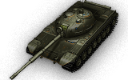
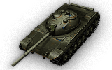
Penetration (mm)
EU  AP 227 /
AP 227 /  APCR 285 /
APCR 285 /  HE 62 → RU
HE 62 → RU  AP 227 /
AP 227 /  APCR 289 /
APCR 289 /  HE 62
HE 62
Damage (HP)
EU  AP 340 /
AP 340 /  APCR 340 /
APCR 340 /  HE 450 → RU
HE 450 → RU  AP 320 /
AP 320 /  APCR 320 /
APCR 320 /  HE 420
HE 420
Firepower
DPM (HP/min) EU 2 193.53 RU 2 225.07
Rate of fire (rounds/min) EU 6.45 RU 6.95
Reload time (s) EU 9.30 RU 8.63
Potential damage EU 17 000 RU 16 000
Gun handling
Aim time (s) EU 2.01 RU 2.11
Dispersion · moving EU 0.17 RU 0.20
Dispersion · tank traverse EU 0.17 RU 0.20
Dispersion · firing EU 3 RU 4
Elevation (°) EU 23 RU 23.08
Depression (°) EU 5 RU 7.50
Mobility
Forward speed on medium terrain (km/h) EU 54.37 RU 60
Forward speed on soft terrain (km/h) EU 34.60 RU 40.07
Reverse speed (km/h) EU 18 RU 20
Weight (kg) EU 40 000 → RU 39 995
Terrain resist (med) EU 1.34 RU 1.15
Terrain resist (soft) EU 2.11 RU 1.82
Turret traverse (°/s) EU 37.55 RU 41.72
Tank traverse (°/s) EU 52.15 RU 39.63
Tank traverse on hard terrain (°/s) EU 49.54 RU 39.63
Tank traverse on medium terrain (°/s) EU 38.93 RU 36.33
Tank traverse on soft terrain (°/s) EU 24.77 RU 22.95
Armor & health
Hull armor · side (mm) EU 50 RU 66
Hull armor · rear (mm) EU 40 RU 30
Turret armor · front (mm) EU 150 RU 160
Turret armor · side (mm) EU 80 RU 110
Turret armor · rear (mm) EU 45 RU 60
Health · engine EU 370 RU 260
Health · track EU 240 RU 200
Health · ammo rack EU 252 RU 180
Track repair time (s) EU 8.02 RU 10.03
Miscellaneous
Stationary camo EU 16.30 RU 14.82
Stationary camo · after firing EU 3.23 RU 2.93
Moving camo EU 12.20 RU 11.12
Moving camo · after firing EU 2.42 RU 2.20
View range (m) EU 390 RU 380
Fire chance (%) EU 12 RU 15
Shell cost EU 250 RU 1 010
Object 259A · Tier VIII
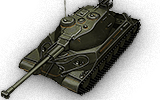
Gun handling
Dispersion (m/100 m) EU 0.36 RU 0.40
Dispersion · damaged EU 0.73 RU 0.81
Dispersion · moving EU 0.19 RU 0.24
Dispersion · tank traverse EU 0.19 RU 0.24
Mobility
Forward speed (km/h) EU 60 RU 55
Forward speed on hard terrain (km/h) EU 43.91 RU 41.47
Forward speed on medium terrain (km/h) EU 33.58 RU 31.72
Forward speed on soft terrain (km/h) EU 22.84 RU 21.57
Engine power (hp) EU 900 RU 850
Power/weight (hp/t) EU 15 RU 14.17
Object 416 · Tier VIII
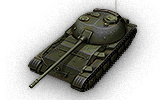
Penetration (mm)
EU  AP 216 /
AP 216 /  HEAT 330 /
HEAT 330 /  HE 50 → RU
HE 50 → RU  AP 221 /
AP 221 /  HEAT 330 /
HEAT 330 /  HE 50
HE 50
Firepower
Ammo capacity EU 35 RU 40
Potential damage EU 11 200 RU 12 800
Gun handling
Aim time (s) EU 1.92 RU 2.01
Dispersion (m/100 m) EU 0.34 RU 0.33
Dispersion · damaged EU 0.67 RU 0.65
Depression (°) EU 4 RU 6
Mobility
Forward speed (km/h) EU 55 RU 50
Forward speed on hard terrain (km/h) EU 55 RU 50
Forward speed on medium terrain (km/h) EU 55 RU 50
Forward speed on soft terrain (km/h) EU 43.61 RU 41.92
Engine power (hp) EU 440 RU 423
Power/weight (hp/t) EU 18.33 RU 17.63
Tank traverse on hard terrain (°/s) EU 52.08 RU 52.23
Tank traverse on medium terrain (°/s) EU 45.57 RU 45.70
Tank traverse on soft terrain (°/s) EU 22.78 RU 22.85
Armor & health
Health EU 1 450 RU 1 400
Miscellaneous
Moving camo EU 18.13 RU 14.55
Moving camo · after firing EU 3.59 RU 2.88
Object 701 · Tier VIII
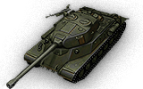
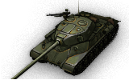
Penetration (mm)
EU  AP 203 /
AP 203 /  HEAT 270 /
HEAT 270 /  HE 68 → RU
HE 68 → RU  AP 215 /
AP 215 /  APCR 264 /
APCR 264 /  HE 50
HE 50
Damage (HP)
EU  AP 390 /
AP 390 /  HEAT 390 /
HEAT 390 /  HE 530 → RU
HE 530 → RU  AP 250 /
AP 250 /  APCR 250 /
APCR 250 /  HE 330
HE 330
Firepower
DPM (HP/min) EU 1 574.59 RU 2 172.92
Module damage EU 165 RU 135
Rate of fire (rounds/min) EU 4.04 RU 8.69
Reload time (s) EU 14.86 RU 6.90
Caliber EU 122 RU 100
Shell velocity (m/s) EU 790 RU 900
Ammo capacity EU 30 RU 52
Potential damage EU 11 700 RU 13 000
Gun handling
Aim time (s) EU 2.78 RU 2.21
Dispersion (m/100 m) EU 0.43 RU 0.34
Dispersion · damaged EU 0.86 RU 0.67
Dispersion · moving EU 0.25 RU 0.18
Dispersion · tank traverse EU 0.25 RU 0.18
Dispersion · turret traverse EU 0.15 RU 0.10
Depression (°) EU 5 RU 6
Mobility
Forward speed (km/h) EU 30 RU 32
Forward speed on hard terrain (km/h) EU 30 RU 32
Forward speed on medium terrain (km/h) EU 30 RU 32
Forward speed on soft terrain (km/h) EU 25.95 RU 19.52
Reverse speed (km/h) EU 12 RU 13
Weight (kg) EU 55 000 → RU 58 500
Power/weight (hp/t) EU 13.64 RU 12.82
Terrain resist (hard) EU 0.96 RU 1.25
Terrain resist (med) EU 1.05 RU 1.44
Terrain resist (soft) EU 1.92 RU 2.40
Turret traverse (°/s) EU 20.86 RU 33.38
Tank traverse (°/s) EU 20.86 RU 27.12
Tank traverse on hard terrain (°/s) EU 20.86 RU 27.12
Tank traverse on medium terrain (°/s) EU 18.96 RU 23.50
Tank traverse on soft terrain (°/s) EU 10.43 RU 14.10
Armor & health
Hull armor · front (mm) EU 120 RU 140
Health EU 1 650 RU 1 500
Miscellaneous
Stationary camo EU 5.99 RU 6.33
Stationary camo · after firing EU 1.14 RU 1.32
Moving camo EU 2.96 RU 3.19
Moving camo · after firing EU 0.56 RU 0.67
View range (m) EU 340 RU 350
Radio range (m) EU 730 RU 625
Shell cost EU 1 065 RU 600
SU-101 · Tier VIII
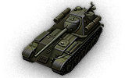
Gun handling
Gun traverse · left (°) EU -10 RU -12
Mobility
Tank traverse on hard terrain (°/s) EU 26.61 RU 26.62
Tank traverse on medium terrain (°/s) EU 22.17 RU 22.19
Tank traverse on soft terrain (°/s) EU 13.30 RU 13.31
Armor & health
Hull armor · front (mm) EU 150 RU 160
Health EU 1 300 RU 1 400
Miscellaneous
View range (m) EU 360 RU 350
SU-14-2 · Tier VIII
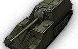
Penetration (mm) 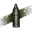
EU  HE 65 /
HE 65 /  AP 258 → RU
AP 258 → RU  HE 51 /
HE 51 /  AP 258
AP 258
Damage (HP)
EU HE 900 /  HE 1200 /
HE 1200 /  AP 600 → RU
AP 600 → RU  HE 1200 /
HE 1200 /  AP 650
AP 650
Firepower
DPM (HP/min) EU 1 280.05 RU 1 831.61
Rate of fire (rounds/min) EU 1.42 RU 1.53
Reload time (s) EU 42.19 RU 39.31
Explosion radius EU 10.40 RU 8
Stun duration · maximum (s) EU 28 → RU —
Stun duration · minimum (s) EU 12.60 → RU —
Shell velocity (m/s) EU 425 RU 480
Max range (m) EU 1 263.11 RU 1 467.52
Potential damage EU 14 400 RU 19 200
Gun handling
Aim time (s) EU 5.37 RU 5.08
Mobility
Tank traverse on hard terrain (°/s) EU 22.38 RU 22.37
Armor & health
Health · engine EU 275 RU 90
Health · track EU 220 RU 140
Health · ammo rack EU 210 RU 100
Track repair time (s) EU 11.70 RU 12.81
Miscellaneous
Moving camo EU 1.77 RU 1.71
Shell cost EU 1 910 RU 2 270
T-44 · Tier VIII
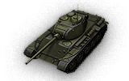
Penetration (mm)
EU  AP 175 /
AP 175 /  APCR 217 /
APCR 217 /  HE 61 → RU
HE 61 → RU  AP 196 /
AP 196 /  APCR 225 /
APCR 225 /  HE 61
HE 61
Firepower
DPM (HP/min) EU 1 877.40 RU 1 821.36
Rate of fire (rounds/min) EU 4.81 RU 4.67
Reload time (s) EU 12.46 RU 12.85
Gun handling
Dispersion (m/100 m) EU 0.38 RU 0.40
Dispersion · damaged EU 0.77 RU 0.81
Dispersion · moving EU 0.12 RU 0.14
Dispersion · tank traverse EU 0.12 RU 0.14
Mobility
Forward speed (km/h) EU 56 RU 51
Forward speed on hard terrain (km/h) EU 56 RU 51
Forward speed on medium terrain (km/h) EU 56 RU 51
Forward speed on soft terrain (km/h) EU 40.67 RU 42.34
Engine power (hp) EU 730 RU 760
Power/weight (hp/t) EU 21.37 RU 22.25
Tank traverse (°/s) EU 58.41 RU 45.89
Tank traverse on hard terrain (°/s) EU 61.20 RU 55.84
Tank traverse on medium terrain (°/s) EU 51 RU 46.53
Tank traverse on soft terrain (°/s) EU 30.60 RU 27.92
Armor & health
Hull armor · front (mm) EU 105 RU 90
Turret armor · front (mm) EU 200 RU 240
Health EU 1 450 RU 1 400
T-44 FL · Tier VIII
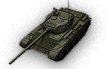
Penetration (mm)
EU  AP 215 /
AP 215 /  APCR 267 /
APCR 267 /  HE 50 → RU
HE 50 → RU  AP 205 /
AP 205 /  APCR 258 /
APCR 258 /  HE 50
HE 50
Firepower
DPM (HP/min) EU 2 300.74 RU 2 086
Rate of fire (rounds/min) EU 9.20 RU 8.34
Reload time (s) EU 6.52 RU 7.19
Shell velocity (m/s) EU 970 RU 880
Gun handling
Dispersion · moving EU 0.12 RU 0.14
Dispersion · tank traverse EU 0.12 RU 0.14
Mobility
Forward speed (km/h) EU 56 RU 51
Forward speed on hard terrain (km/h) EU 56 RU 51
Forward speed on medium terrain (km/h) EU 56 RU 51
Forward speed on soft terrain (km/h) EU 40.91 RU 42.59
Engine power (hp) EU 730 RU 760
Power/weight (hp/t) EU 21.50 RU 22.38
Tank traverse (°/s) EU 58.41 RU 45.89
Tank traverse on hard terrain (°/s) EU 58.41 RU 45.89
Tank traverse on medium terrain (°/s) EU 48.67 RU 38.24
Tank traverse on soft terrain (°/s) EU 29.20 RU 22.95
Armor & health
Hull armor · front (mm) EU 105 RU 90
Turret armor · front (mm) EU 200 RU 240
Health EU 1 450 RU 1 400
T-44-100 · Tier VIII
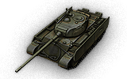
Penetration (mm)
EU  AP 210 /
AP 210 /  APCR 253 /
APCR 253 /  HE 50 → RU
HE 50 → RU  AP 205 /
AP 205 /  APCR 258 /
APCR 258 /  HE 50
HE 50
Firepower
DPM (HP/min) EU 2 406.92 RU 2 086
Rate of fire (rounds/min) EU 9.63 RU 8.34
Reload time (s) EU 6.23 RU 7.19
Gun handling
Dispersion · moving EU 0.10 RU 0.12
Dispersion · tank traverse EU 0.10 RU 0.12
Dispersion · turret traverse EU 0.08 RU 0.11
Armor & health
Turret armor · front (mm) EU 190 RU 240
Health EU 1 350 RU 1 400
T-44-100 Igrovoy · Tier VIII
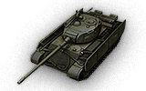
Penetration (mm)
EU  AP 210 /
AP 210 /  APCR 253 /
APCR 253 /  HE 50 → RU
HE 50 → RU  AP 205 /
AP 205 /  APCR 258 /
APCR 258 /  HE 50
HE 50
Firepower
DPM (HP/min) EU 2 406.92 RU 2 086
Rate of fire (rounds/min) EU 9.63 RU 8.34
Reload time (s) EU 6.23 RU 7.19
Gun handling
Dispersion · moving EU 0.10 RU 0.12
Dispersion · tank traverse EU 0.10 RU 0.12
Dispersion · turret traverse EU 0.08 RU 0.11
Armor & health
Turret armor · front (mm) EU 190 RU 240
Health EU 1 350 RU 1 400
T-54 first prototype · Tier VIII
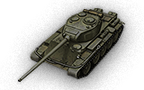
Penetration (mm)
EU  AP 190 /
AP 190 /  APCR 247 /
APCR 247 /  HE 50 → RU
HE 50 → RU  AP 210 /
AP 210 /  APCR 260 /
APCR 260 /  HE 50
HE 50
Firepower
DPM (HP/min) EU 1 955.63 RU 2 086
Rate of fire (rounds/min) EU 7.82 RU 8.34
Reload time (s) EU 7.67 RU 7.19
Gun handling
Dispersion · moving EU 0.20 RU 0.14
Dispersion · tank traverse EU 0.20 RU 0.14
Dispersion · turret traverse EU 0.12 RU 0.10
T-54 first prototype FL · Tier VIII

Penetration (mm)
EU  AP 190 /
AP 190 /  APCR 247 /
APCR 247 /  HE 50 → RU
HE 50 → RU  AP 210 /
AP 210 /  APCR 260 /
APCR 260 /  HE 50
HE 50
Firepower
DPM (HP/min) EU 1 955.63 RU 2 086
Rate of fire (rounds/min) EU 7.82 RU 8.34
Reload time (s) EU 7.67 RU 7.19
Gun handling
Dispersion · moving EU 0.20 RU 0.14
Dispersion · tank traverse EU 0.20 RU 0.14
Dispersion · turret traverse EU 0.12 RU 0.10
TITT Rozanov · Tier VIII
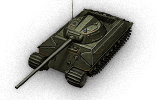
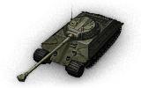
Penetration (mm)
EU  AP 212 /
AP 212 /  APCR 242 /
APCR 242 /  HE 50 → RU
HE 50 → RU  AP 222 /
AP 222 /  APCR 248 /
APCR 248 /  HE 50
HE 50
Damage (HP)
EU  AP 200 /
AP 200 /  APCR 200 /
APCR 200 /  HE 280 → RU
HE 280 → RU  AP 300 /
AP 300 /  APCR 300 /
APCR 300 /  HE 400
HE 400
Firepower
DPM (HP/min) EU 2 406.92 RU 2 040.65
Module damage EU 115 RU 135
Rate of fire (rounds/min) EU 12.03 RU 6.80
Reload time (s) EU 4.99 RU 8.82
Caliber EU 85 RU 100
Shell velocity (m/s) EU 1 100 RU 1 020
Potential damage EU 12 000 RU 18 000
Gun handling
Dispersion (m/100 m) EU 0.33 RU 0.36
Dispersion · damaged EU 0.65 RU 0.73
Dispersion · moving EU 0.18 RU 0.16
Dispersion · tank traverse EU 0.18 RU 0.16
Mobility
Forward speed (km/h) EU 42 RU 44
Forward speed on hard terrain (km/h) EU 38.06 RU 44
Forward speed on medium terrain (km/h) EU 32.98 RU 39.80
Forward speed on soft terrain (km/h) EU 24.74 RU 29.85
Engine power (hp) EU 520 RU 640
Weight (kg) EU 40 000 → RU 40 800
Power/weight (hp/t) EU 13 RU 15.69
Armor & health
Health · engine EU 190 RU 370
Miscellaneous
Fire chance (%) EU 15 RU 12
Shell cost EU 255 RU 435